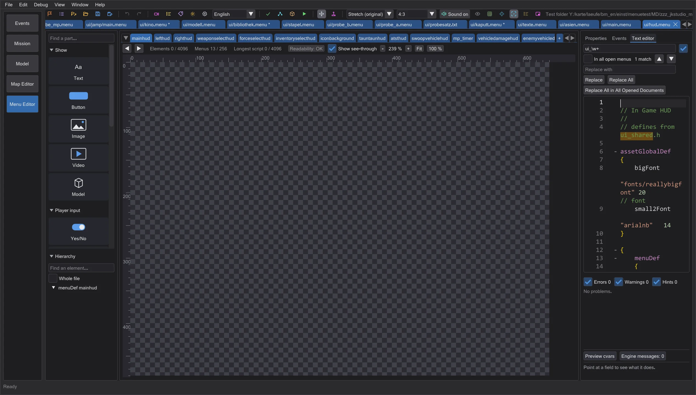
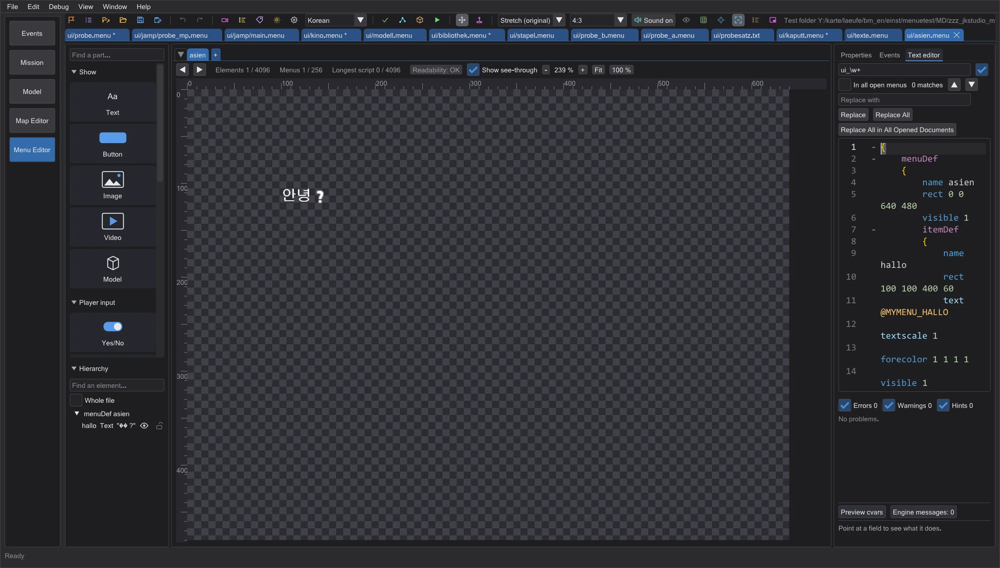

Editor menu: HUD, asijské texty a světelné meče
Upravujte HUD s ukázkovými hodnotami tak, jak ho kreslí hra, pište vlastní texty v korejštině, japonštině a čínštině, všechny styly čepelí Movie Duels a černé čepele, póza postavy a zvuky jako ve hře.
Editor HUD#

Obrázek je zatím anglickyOtevřete ui/hud.menu jako každé jiné menu. Hra nekreslí HUD jen pomocí menu: herní kód čte polohu, barvu a obrázek pojmenovaných itemů (health_tic1 až 4, armor_tic…, force_tic…, ammo_tic…, healthamount, armoramount, forceamount, ammoamount, saberstyle_fast/medium/strong, frame) a kreslí přes ně dílky, čísla a obrázky s hodnotami hráče. Přesně to dělá náhled: Hodnoty HUD (jak je čte cgame) ve vlastnostech má posuvníky pro zdraví, brnění, Sílu, munici, styl meče a zaměřovač; plné dílky jsou bílé, poslední slábne se zbytkem, brnění pod čtvrtinou bliká, munice 0 zčervená. Posuňte nebo přebarvěte item a HUD ho hned následuje.
Napodobeno je to pro Jedi Academy pro jednoho hráče. Herní kód pro více hráčů a Movie Duels kreslí svůj HUD jinak (celočíselné kroky, režimy HUD, body bloku); tam náhled zobrazí jen menu a řekne to.
Texty v korejštině, japonštině a čínštině#

Obrázek je zatím anglickyTexty nabízí také korejštinu, tchajwanštinu, japonštinu a čínštinu. Pište normálně; soubor dostane kódování, ve kterém písmo hry daný jazyk čte (KSC 5601, Big5, Shift-JIS, GB 2312) - ostatní jazyky zůstávají v Latin-1 jako menu. Znaky, které hra neumí zobrazit jako jeden znak (například hangul mimo KSC 5601 nebo katakana poloviční šířky), se uloží jako ? a vypíšou pod tabulkou. Je-li jazyk náhledu nastaven na jeden z těchto jazyků, kreslí náhled znaky ze stránek glyfů hry (fonts/kor_…, jap_…, chi_…, tai_…) ve velikosti, rozestupu a měřítku hry.
Styly čepelí Movie Duels a černé čepele#
S daty Movie Duels se menu mečů řídí cg_SFXSabers pro každý styl: 0 (Raven), 1 Episode I, 2 Episode II, 3 Episode III, 4 SFX (výchozí), 5 Original Trilogy, 6 Return of the Jedi, 7 The Force Awakens, 8 Unstable, 9 Rebels, 10 Clone Wars, 11 Maul - každý s vlastními obrázky záře a jádra, velikostmi (cg_SFXSabersGlowSize…, cg_SFXSabersCoreSize…) a tvarem. Nestabilní jílce dostanou vždy nestabilní čepel. Černé čepele se kreslí se svým režimem míchání, takže jako ve hře ztmaví to, co je za nimi.
Póza postavy a zvuky#
Animace modelu (model_g2anim, v menu postavy ui_char_anim) začne, když ji hra nastaví - při načtení menu a znovu, když skript jako uiScript character sestaví postavu - a běží v taktu snímků hry, prolínaná mezi dvěma snímky, ve smyčce nebo se zastavením jako ve hře. V režimu Ovládat čtou skripty přesně ta slova, která čte hra: uiScript svůj název a slova, která daný skript potřebuje, exec jedno slovo - příkazy za nimi běží dál i bez ;. exec "music …" spustí hudbu na pozadí jako konzole.